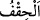

ediyorlardı. Alay edip durdukları şey, kendilerini kuşatıverdi.
Ey Muhammed (s.a.), Mekke kâfirlerine “Âd’ın kardeşini (Hûd’u) an;” ki onun
kavminin halinden ibret alsınlar. “Ahkâf ’” denen kum tepelerinin yanındaki elçiler
“kavmini uyarmıştı. Onun önünden ve ardından nice uyarıcılar da gelip geçti
(demişti ki): “Allah’tan başkasına kulluk etmeyin; ben sizin,” Allah’a ortak koşmanız
ve tevhidden yüz çevirmeniz sebebiyle “büyük bir günün azâbına uğramanızdan
korkuyorum.”
“Âd’ın kardeşini (Hûd’u) an.” Âd kavminden bir peygamber olan kardeşin Hûd’u da
hatırla!” “Ad’ın kardeşi” ifâdesinin mânâsı yâni neseb olarak onlardan biri demektir.
Yoksa din kardeşliği değildir. Arapların “ey arap kardeş” ifâdesi gibi. Âd, Nuh oğlu
Sam oğlu İrem oğlu Us oğlu Ad’ın evlatlarıdır. Hûd ise, Ad oğlu Halud oğlu Rabah oğlu
Abdullah oğludur.
Bazılarından şu rivâyet yapılmaktadır: Ad, baharda seyyar sütun sahipleri olup yazın
sıcaklar bastırınca evlerine dönerlerdi.
Bu kavim İrem kabilesinden olup Yemen beldelerinden Şahr yahut Şihr denen bir sahil
bölgesinde, kum tepeleri arasında iskân ediyorlardı. Bu bölge Uman ve Aden arasında
bir sahil bölgesidir. Yahut Mehre ve Uman arasındaki Yemen’de bir beldedir.
Şam’da olan ise Amman’dır. Mehre, mehriyye develerinin kendisine nisbet edildiği
yerdir.
Fethurrahman’da şöyle denmiştir: Sözler ve rivâyetler arasında sahih olan şudur: Ad
kavminin yaşamış olduğu beldeler Yemen’de olup sütunlu İrem bunlara âid idi.
“, “ kelimesinin çoğulu olup kum tepelerinden oluşan sahil boyu, girintili,
çıkıntılı bir dizi tepelerdir. “ kelimesi
“ kelimesinden alınmıştır. Bir şey eğri olduğu zaman böyle denilir. “Hıkf”
kelimesi “ihkavkafe”den alınmıştır. Halbuki durum tam aksine olmalıdır.
Çoğu zaman çöl ve sahrâ bulunan ülkelerde bu tepecikler oluşur. Çünkü rüzgâr ve
fırtına bunu oluşturmaktadır.
Hz. Ali -kerremallahu vecheh-den rivâyet edilmiştir: İnsanlar arasında en kötü vâdî
ahkâf vâdîsi, bir de kâfirlerin ruhlarının atıldığı Hadramut’taki Rahut vâdîsidir. En
hayırlı vâdî ise Mekke vâdîsidir. Bir de Hindistan’da Âdem (a.s.)’ın cennetten inmiş
olduğu vâdîdir. Yine Hz. Ali şöyle demiştir: İnsanlar arasında en iyi su kuyusu Zemzem
kuyusudur. En kötü kuyu da Rahut kuyusudur. Keşfü’l- esrâr’da böyledir.
Âyetin hülâsâsı şudur: Ey Muhammed Hûd (a.s.)’ın kavmini uyardığı gibi sen de
kavmini şirkin akibetinden ve büyük azaptan korkut ve uyar. Elbette Hûd (a.s.)’dan önce
ve sonra nice elçiler kavimlerini aynı şekilde uyardılar. Evet, sen de bu konuyu onlara
hatırlat.
“Onun önünden ve ardından nice uyarıcılar”, elçiler “da gelip geçti.” “Nüzûr”
kelimesi “nezir”in çoğulu olup “uyarıcı” mânâsındadır. Bu cümle müfesser ile müfessir